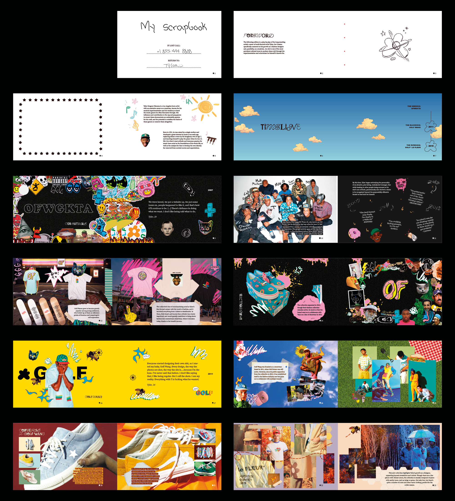
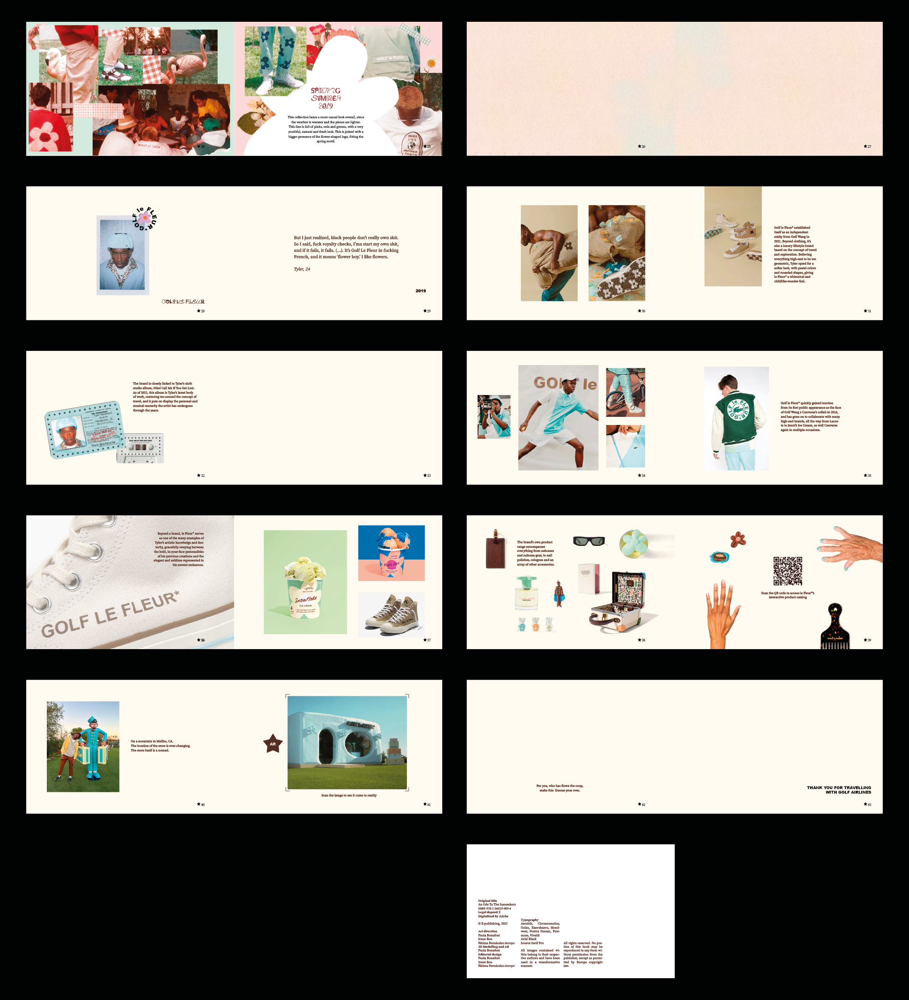
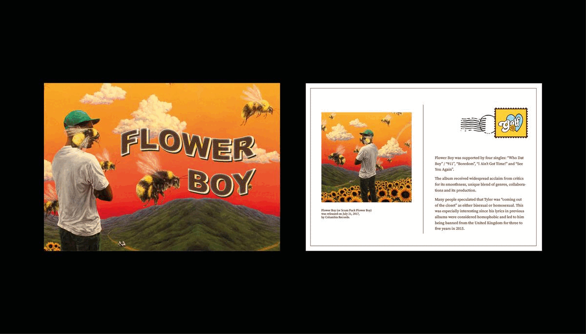

An Ode to the Sunseekers is an editorial journey through artist Tyler, the Creator's career as a
fashion designer and musician. The project is formatted in such a way that the artist becomes a passenger
of the flight that is his own career, treating the book as his travel scrapbook,
with several stops that represent each of his major fashion brands and milestones.
The foremost stage of the experience is its packaging, which emulates Golf le Fleur*'s Globe-trotter
suitcases. Inside can be found a hand-sewn book (Tyler's scrapbook) as well as a small stamp that the reader will be able to use at
the end of the book, to mark their participation in the journey. It also includes a QR code to
an interactive catalogue of some of le Fleur*'s products, as well as an AR depiction of the brand's pop-up shop.


